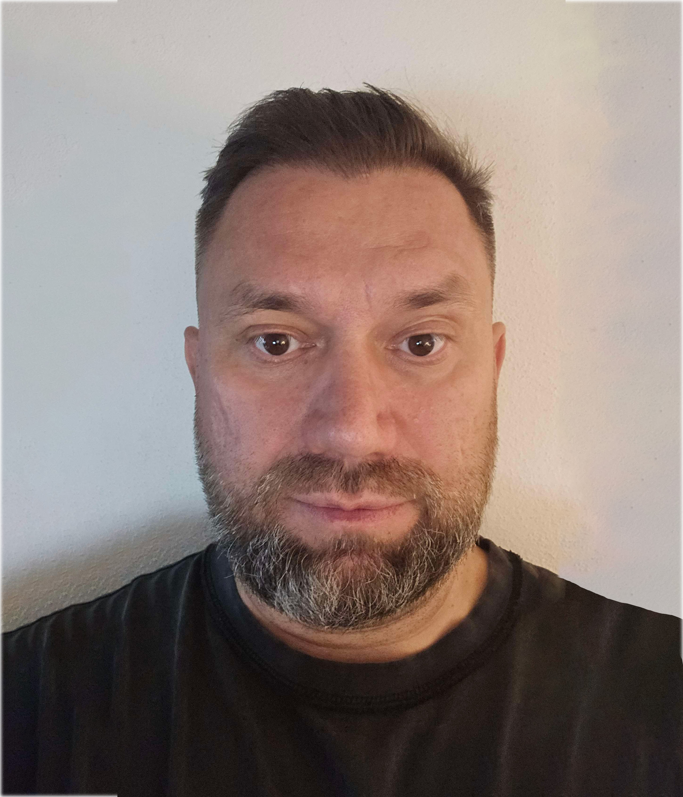
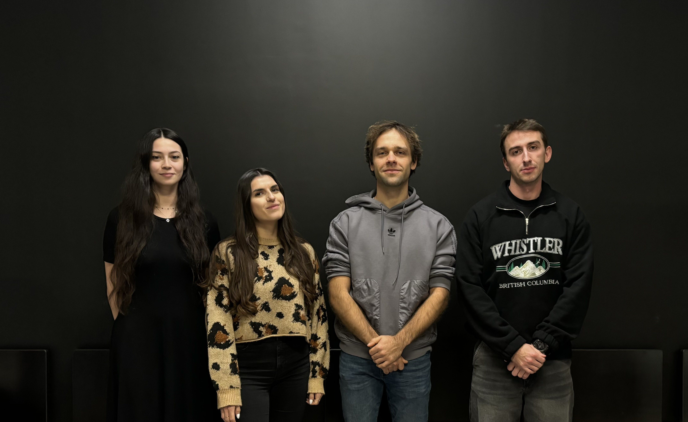
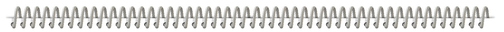
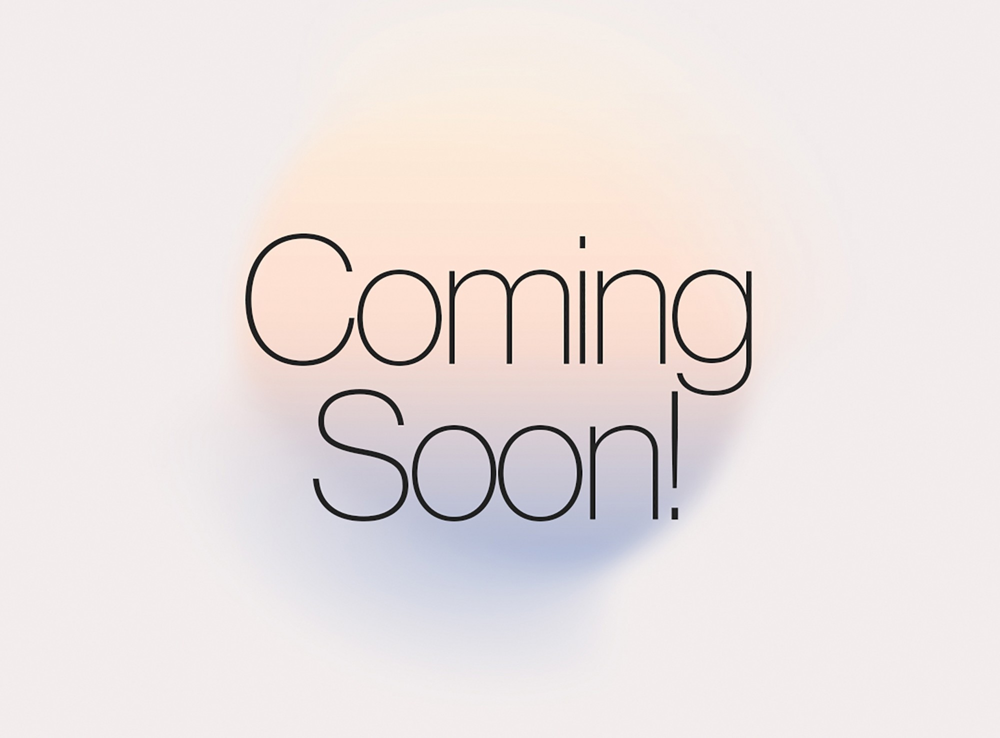

Náš tím



Kristína Járebová
Project Manager
vedúci tímu, komunikácia s vedením, rozdelenie úloh, tvorba dokumentácie, kontrola
Pracujem na technickom oddelení v rámci Technical & Quality Department, kde som v úzkom kontakte s IT tímom. Hoci zatiaľ nemám priame skúsenosti v oblasti IT, táto téma ma dlhodobo zaujíma a v budúcnosti by som sa rada profesionálne uplatnila práve v tejto oblasti. V minulosti som absolvovala kurz Social Media Marketingu, ktorý zahŕňal aj tvorbu webových stránok prostredníctvom WordPressu a základy grafického dizajnu vo Figme a Canve. V tíme BagPoint zastávam pozíciu vedúcej, pričom využívam svoje skúsenosti s vedením tímov z predchádzajúcich zamestnaní. Zodpovedám za koordináciu práce, kontrolu výstupov a prípravu dokumentácie. Tento projekt vnímam ako príležitosť rozšíriť svoje vedomosti v oblasti webových technológií a naučiť sa viac od kolegov, ktorí majú silnejšie technické zázemie.
jarebova1@ucm.sk
Tamara Némethová
Frontend, Dizajn
V tíme sa venujem návrhu vizuálnej identity a používateľského rozhrania UI, ako aj celkovému používateľskému zážitku UX. Podieľam sa na tvorbe dizajnu, rozloženia stránok a štruktúry navigácie, aby celý systém pôsobil prehľadne a intuitívne. Zároveň sa zameriavam na to, ako budú rezervácie a interakcie na stránke prebiehať v praxi, aby bol projekt funkčný aj po technickej stránke.
Som študentkou 2.ročníka Aplikovanej informatiky na UCM, kde ma baví prepojenie technických riešení s tvorivým dizajnom.
nemethova2@ucm.sk
Jozef Janotík
Backend developer
Prepojenie frontendu s backendom, tvorba a implementácia API, spracovanie dát a spolupráca na vývoji funkcionalít aplikácie.
Som študent Univerzity sv. Cyrila a Metoda v Trnave, odbor Aplikovaná informatika. V budúcnosti sa chcem venovať backend vývoju, rozvíjať svoje programátorské zručnosti a pracovať na projektoch, ktoré prinášajú praktické riešenia.
janotik1@ucm.sk
Igor Oborný
Backend Developer
Návrh databázy, správa hostingu a infraštruktúry, tvorba a implementácia API, správa GitHub repozitára, spolupráca na vývoji funkcionalít aplikácie.
Som študentom UCM v odbore Aplikovaná informatika, kde sa snažím rozvíjať svoje znalosti v oblasti IT. Popri štúdiu pôsobím ako profesionálny vojak so zameraním na elektro, pričom by som v budúcnosti rád prepojil tieto dve oblasti a využil poznatky z informatiky pri rozvoji IT infraštruktúry v armáde. Počas projektu sa zameriavam najmä na backend a testovanie funkcií, pričom sa snažím prakticky uplatniť nadobudnuté poznatky a ďalej sa zlepšovať v technickej časti vývoja webových aplikácií.
oborny1@ucm.skJán Földeši
Backend Developer
backend, testovanie aplikácie
Som študentom 2. ročníka aplikovanej informatiky na UCM v Trnave, odbor Aplikovaná informatika. Hoci momentálne nepôsobím v IT oblasti, mám silnú motiváciu sa v tomto smere vzdelávať a získať praktické skúsenosti. V projekte by som sa chcel venovať najmä backendu a testovaniu, kde môžem rozvíjať svoje technické aj analytické zručnosti. Verím, že svojím zodpovedným prístupom prispejem k úspešnej realizácii projektu.
foldesi1@ucm.sk
Plán projektu
Analýza problému
Projekt BagPoint vznikol ako riešenie pre cestovateľov, ktorí potrebujú dočasne a bezpečne uskladniť svoju batožinu počas pobytu v meste. Cieľom je vytvoriť webovú aplikáciu, ktorá umožní používateľom rezervovať si úložný box dopredu alebo využiť tzv. „walk-in“ možnosť – okamžité uloženie batožiny priamo na mieste.
Aplikácia má uľahčiť prístup k úložným miestam, zjednodušiť proces rezervácie a poskytnúť používateľovi prehľad o jeho batožine, čase uloženia a cene. Zároveň rieši aj situácie, ako je nevyzdvihnutá batožina či preplnené úložiská, prostredníctvom vopred definovaných prevádzkových pravidiel.
Ciele projektu
- Vytvoriť funkčný webový prototyp systému na správu úložných boxov.
- Implementovať prihlasovanie a registráciu používateľov s databázovým prepojením.
- Umožniť dva režimy používania: walk-in a rezervácia vopred.
- Zobraziť stav skrinky, čas uloženia a aktuálnu cenu v používateľskom profile.
- Vytvoriť administratívne rozhranie pre správu boxov a monitoring ich stavu.
- Zabezpečiť základnú ochranu údajov a správne ošetrenie chýb.
- Navrhnúť prehľadný a responzívny frontend dizajn.
- Vypracovať prevádzkové pravidlá a obchodné podmienky.
Špecifikácia požiadaviek
- Registrácia a prihlásenie používateľa
- Zobrazenie dostupných boxov a mapa
- Rezervácia skrinky vopred alebo priamo na mieste
- Výpočet ceny podľa času alebo dňa
- Responzívny dizajn
- Prehľadné a intuitívne rozhranie
- Jednoduché ovládanie
Čiastkové úlohy podľa rolí
Frontend = Tamara Némethová
- Návrh používateľského rozhrania (UI/UX)
- Dizajn webovej stránky
- Responzivita, navigácia, testovanie použiteľnosti
- Vizuálne spracovanie projektu
- Testovanie používateľskej interakcie a funkčnosti na viacerých zariadeniach
- Tvorba API a logiky systému
- Prepojenie frontendu a backendu
Backend tím = Jozef Janotík, Igor Oborný, Ján Földeši
- Návrh a implementácia databázy (PostgreSQL)
- Tvorba API a logiky systému
- Prepojenie frontendu a backendu
- Správa používateľských účtov, rezervácií a boxov
- Testovanie funkčnosti a bezpečnosti pripojení
Vedúci tímu = Kristína Járebová
- Koordinácia prác a komunikácia s vyučujúcim
- Kontrola výstupov a obsahu webu
- Vedenie dokumentácie a harmonogramu, príprava prezentácií
- Správa podstránky „O projekte“
Projektové dokumenty
Prehľad našej dokumentácie k projektu BagPoint.
Kontrolné body (milestones)
Prehľad hlavných etáp projektu BagPoint počas semestra.
| Týždeň | Úlohy a ciele | |
|---|---|---|
| 1 | 11.10. – 18.10. | Výber témy, názvu, tvorba loga, založenie Discordu, brainstorming funkcií, návrh štruktúry webu. |
| 2 | 18.10. – 25.10. | HTML štruktúra, základný dizajn, navigácia, formulácia cieľov, založenie GitHubu, prototyp mapy a pop-upu. |
| 3 | 25.10. – 1.11. | Registrácia používateľov, prepojenie JS a PHP, odosielanie a spracovanie dát, návrh databázy. |
| 4 | 1.11. – 8.11. | Testovanie spojenia s databázou, tvorba ER diagramu, návrh API pre login, zmenu hesla a odstránenie účtu. |
| 5 | 8.11. – 15.11. | Implementácia logiky rezervácie, výpočet ceny, správa boxov, úprava dizajnu podľa UX testov. |
| 6 | 15.11. – 22.11. | Doplnkové funkcie (história rezervácií, zobrazenie cien), optimalizácia kódu a výkonu. |
| 7 | 22.11. – 29.11. | Testovanie projektu na serveri, ladenie chýb, dokumentácia technických častí. |
| 8 | 29.11. – 6.12. | Tvorba záverečnej prezentácie, dokončenie motivačného dokumentu, úprava webu. |
| 9 | 6.12. – 13.12. | Finálne testovanie, kontrola používateľského rozhrania a databázových spojení. |
| 10 | 13.12. – 20.12. | Odovzdanie projektu, prezentácia, zhodnotenie výstupov tímu. |
Zápisnica projektu
Postup prác tímu BagPoint od začiatku projektu (11.10.2025) až po jeho odovzdanie (20.12.2025). Zápisnica bude priebežne dopĺňaná počas trvania semestra.

- Výber témy a názvu projektu
- Vytvorenie loga
- Založenie Discord skupiny
- Brainstorming funkcionalít
- Rozdelenie úloh v tíme (frontend, backend, dokumentácia)
- Začiatok tvorby HTML štruktúry webu
- Návrh a implementácia základnej navigácie
- Vytvorenie vizuálneho štýlu v CSS
Členovia: celý tím
- Implementácia login funkcionality (frontend)
- Tvorba prototypu mapy s markerom pre úložné boxy
- Pop-up okno pre rezerváciu, úspešná správa pre formulár
- Založenie GitHub repozitára
- Návrh sekcie „Môj profil“ (vizuálny prototyp)
- Tvorba návrhu databázy v PostgreSQL
- Prvé prepojenie dát medzi JS a PHP (fetch API)
- Testovanie funkcií a riešenie chýb
- Príprava motivačného listu, prezentácie, zápisnice
Členovia: Tamara (frontend), Jozef (backend), Igor (backend), Kristína (dokumentácia)
- Implementácia login funkcie (frontend + backend)
- Implementácia registrácie nových používateľov
- Funkcia „Zabudnuté heslo“ – posielanie reset linku
- Zmena hesla pre existujúce účty
- Testovanie a odosielanie dát cez fetch API
- Začiatok prípravy formulára pre rezervácie
Členovia: Tamara (frontend), Jozef (backend), Igor (backend)
- Testovanie API pre login, zmenu hesla, reset hesla
- Implementácia základného formulára pre rezerváciu boxov
- Backend logika pre uchovanie rezervácií
- Testovanie spojenia s databázou a validácia dát
- Kontrola UX formulárov a vizuálu pre pohodlné používanie
- Dokumentácia a zápis aktuálneho stavu projektu
Členovia: Tamara (frontend), Jozef (backend), Igor (backend), Kristína (dokumentácia)
- Implementácia základnej logiky rezervácií (výber boxu, dátumu a času)
- Výpočet ceny rezervácie podľa zvolených parametrov (čas, typ boxu)
- Práca na správe boxov – kontrola dostupnosti, aktualizácia statusov
- Prvé testovanie toku rezervácie (frontend + backend komunikácia)
- Úprava dizajnu rezervačného formulára podľa pripomienok z interného UX testovania
- Aktualizácia harmonogramu a zápisnice, zabezpečenie odovzdania potrebných materiálov
Členovia: Tamara (frontend), Jozef (backend), Igor (backend), Ján (backend), Kristína (dokumentácia)
- Plánované týždenné stretnutia tímu (1x týždenne)
- Priebežná komunikácia a koordinácia cez Discord
Členovia: celý tím
Štruktúra webu
